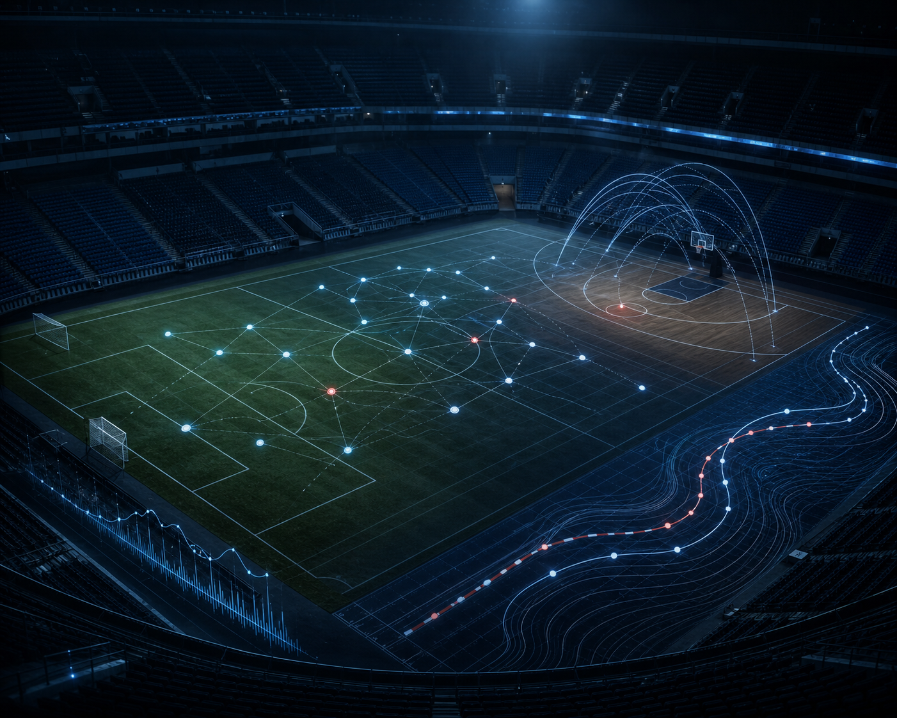

PAINS
01 / IDENTITY
PAINS Data Archive · Since 2020
WE TURN SPORTS INTO INSIGHT
스포츠에서 질문을 찾아내, 새로운 의미를 발견합니다.
167+PROJECTS
11THGENERATION
2020FOUNDED
03
PROJECTS
질문에서 출발해 결과를 만듭니다.
야구, 축구, 농구, F1, e-sports 등 모든 스포츠에서. 연구를 진행하고 부원과 공유합니다.
VIEW PROJECTS ↗
SELECT A VISUAL CONCEPT · 인물 없는 3개 시안
04 / COMMUNITY
04
COMMUNITY
같이 보고, 같이 즐기고, 같이 성장합니다.
스포츠 경기 단체 관람, 연사초청, MT, 체육대회와 소모임을 통해 서로 다른 관심 종목을 가진 부원들이 하나가 되어 교류합니다.


05 / SCHEDULE
05
UPCOMING
다가오는 일정
정기 세미나부터 소모임·행사까지, PAINS의 다음 일정을 확인하세요.
- — TBD
- — TBD
- — TBD
- — TBD
PAINS ARCHIVE
167+ PROJECTSEXPLORE → NOTICEREAD → JOIN PAINSAPPLY →